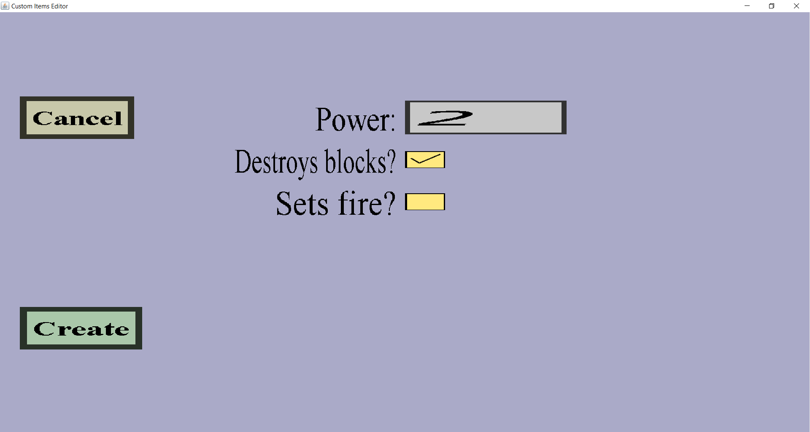

The explosion effect edit menu can be used to add or modify explosion projectile effects. These simply create an explosion at the projectiles location each time the effect is performed. It should look like this:
There should be a 'Cancel' button and an 'Apply' or 'Create' button. Also, there should be an edit field for the power and checkboxes for whether or not to set fire and destroy blocks.
The power edit field can be used to decide how big the explosion is going to be. A higher Power means a bigger explosion that will deal more damage to players and mobs and it will destroy more blocks. If you choose a Power of 4, the explosion will be as strong as TNT. The power doesn't have to be an integer, it can be any positive number.
The 'Destroys blocks?' checkbox can be used to decide whether the explosion should destroy blocks or not. If you keep it checked, the explosion caused will destroy blocks like any other explosion. If you uncheck it, the explosion will deal damage to mobs and players, but will not destroy any blocks.
The 'Sets fire?' checkbox can be used to decide whether or not the explosion will set fire to some blocks in the explosion area (similarly to explosions of ghast fireballs). If you keep it unchecked, the explosion will not set any blocks on fire. If you check it, the explosion will set fire to some blocks in the explosion region.